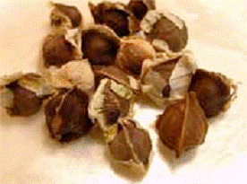
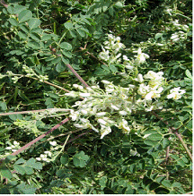
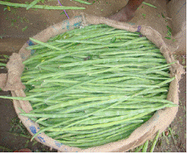
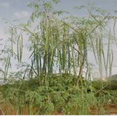
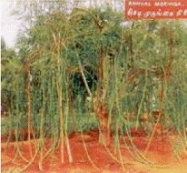
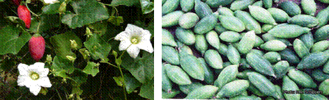

HORT 281 :: Lecture 32 :: ORIGIN, AREA, PRODUCTION, VARIETIES, PACKAGE OF PRACTICES FOR DRUMSTICK, COCCINEA AND CURRY LEAF DRUMSTICK

Origin, area, production, varieties, package of practices for DRUMSTICK, COCCINEA AND CURRY LEAF
DRUMSTICK
(Moringa olerifra Lam.) (2n = 22)
(Hindi : Seeng, Sahgan) Family : Moringaceae
Drumstick is grown for its nutrient rich tender, but full grown pods, leaves and flowers which are used for culinary preparations. Fruits are rich in vitamin C (120 mg/100g), carotene (110 mg), phosphorus (110 mg) and minerals like magnesium (28 mg), potassium (259 mg), sulphur (137 mg), chlorine (423 mg) etc. The crop is grown in homesteads for family sues or cultivated commercially for market. Tender leaves and flowers are comparable to that of colocasia in vitamins and minerals and have great role for combating malnutrition of urban and rural masses. Certain morigna types principally grown for its foliage are reported from West Indies. Drumstick roots are good substitute for horse radish. Root, bark and seed have many industrial uses also.
Origin and distribution
Originated in South West India, drumstick became a popular vegetable in South Indian states. The crop is widely distributed in India, Sri Lanka, Pakistan, Singapore, Malaysia, Cuba, Jamaica and Egypt.
Botany
Drumstick is a small or medium sized perennial tree of about 10 m height with fragile and corky stem. The leaves are usually tri-pinnate with elliptic leaflets. Pods are pendulous and length ranges from 20 cm to 100 cm. Seeds are trigonous with wings on angles.
Flowers are produced on current season growth on large and erect panicles or monocladial cyme. Flowers were yellowish creamy white and sweet smelling. Individual flowers are bisexual, zygomorphic and pedicellate.
Calyx and corolla consist of five sepals and petals. Androecium also has five stamens alternating with five stamindodes. Gynoecium has a superior, one celled and three carpelled ovary containing many ovules on parietal placentation. Stigma is truncate.
Flowering in drumstick varies from place to place and is greatly influenced by rain, temperature, humidity, wind, soil temperature, soil moisture etc. Under South Indian condition, one or two distinct peak periods of flowering noticed. Peak period of flowering in central parts of Kerala is December-January while in southern part it is February-March and July-August with maximum flowering in February-March. Under Coimbatore and Bangalore conditions, flowering seasons are March-May and July-September respectively. Anthesis continues throughout the day. Two anthesis peaks i.e., 2.00 p.m and 4.00 a.m. are noticed at Thiruvannthapuram. In most parts of Tamil Nadu, flowering is from 4.30 a.m. to 6.30 p.m.
 In southern part of Kerala, stigma becomes receptive one day prior to flower opening and continues with maximum receptivity on the day of opening and a sudden decline thereafter.
Varieties / cultivars
A number of local cultivars are known by the place of their cultivation. Details of local cultivars are given:
- Jaffna moringa - a perennial type which bares 60-90 cm long pods with soft flesh and good taste.
- Chavakacheri muringa - a perennial type producing 90-120 cm long pods.
- Chemmuringa- This perennial type flowers throughout year and bears red tipped fruits.
- Yazhpanam muringa – same as Jaffna type
- Pal muringai – Pods having thicker pulp and better taste
- Puna muringa– Thinner fruits.
- Kodikal muringa– produces short pods of 15-20 cm long and is sued as support for betel vine plants. Propagated by seeds.
There are only a few named varieties and the details are given below:
KM-1 (Kudumianmalai 1)– Bushy variety propagated through seeds. Plants come to bear 6 months after planting and can be rationed for 2-3 years. Productivity 400-500 fruits / year. Developed at Anna Pannai, Kudumianmalai of Pudukottai.
PKM – 1 – This “seed moringa”, propagated through seeds is developed at Horticultural Research Station, TNAU, Periyakulam. Plants grow to a height of 4-6 m and come to flower in 90-100 days after planting. The first harvest starts 160-170 days after planting and on an average each tree bears 200-225 fruits / year. Pods are 65-70 cm long with 6.3 cm girth and 150 g weight. Fruits are green coloured and highly pulpy.
PKM 2– This “seed moringa”, propagated through seeds, is also developed at Horticultural Research Station, TNAU, Periyakulam. Pods are extra long (125-130 cm), pulpy and suitable for homestreads.
Dhanraj– This is also an annual drumstick propgated through seeds and is evolved at KRC College of agriculture, UAS, Arabhavi, Karnataka.
Crop improvement programmes in the Department of Olericulture, Kerala Agricultural Unviersity, Vellanikkara resulted in the development of three promising perennial drumstick clones viz., MO 70, MO 95 and MO 44 and one annual seed drumstick, AD 4.
Climate and soil
Drumstick is predominantly a crop of dry and arid tracts. However intensive cultivation with good irrigation and systematic cultural practices will give good yield especially for annual type. The plant put forth luxuriant growth at 25-30oC. Higher temperature results in heavy flower shedding. Crop is also injured severely by frost. Though the crop comes up well in all types of soil, performance is better in sandy loam rich in organic matter. A pH range of 6.0 – 6.72 is most ideal.
Propagation
Perennial types are propagated through limb cutting of 90-100 cm length and 5-8 cm diameter. Annual types are propagated by seeds. Average seed weight is 0.288 g and 10 g contain 35 seeds. Seeds @ 625 g/ ha can be either sown in pits or transplanted after raising seedlings in polythene bags. Transplanting of seedlings can be made one month after sowing. It is always advisable to raise a few plants additionally in polythene bags for purpose of gap filling. Time of sowing of seeds for annual seed drumstick or planting of limb cuttings varies from region to region depending on receipt of monsoon.
Land preparation
Field is ploughed 3-4 times. Apply FYM @ 20 t ha-1 at last ploughing. Take pits of size 45 x 45 x 45 cm at a spacing of 6.0 x 6.0 m for perennial types and 2.5 x 2.5 m for annual types, apply 10 kg FYM and fill up pits.
Interculture and manuring
To facilitate side branches, shoot may be nipped off when the seedlings are at 75 cm height. Apply 100 g Urea, 100 g Super phosphate and 50 gm MOP and irrigate heavily. Top dress plants with 100 g Urea again 3 months after first application. Provide light irrigation for early emergence of seedlings for annual type.
After harvest of main crop, annual types are cut back tone meter height from ground level for rationing. These rationed plants develop new shoots and start bearing four to five months after rationing. Likewise about three ratoon crops can be taken. At each and every ratoon crop, plants are supplied with N, P and K nutrients as already mentioned along with 20-35 kg of FYM and irrigate.
CURRY LEAF
Murraya koenigii
Rutaceae
Curry leaf (Murraya koenigii) is an important perennial tree vegetable. Its leaves are used mainly to improve the taste and flavour of foods. Leaves are slightly pungent and retain their flavour even after drying. Ground curry leaf with mature coconut kernel and spices forms an excellent preserve. It grows wild in the foothills and plains of the Himalayas from Kumaon to Sikkim. In south India, especially in Tamil Nadu, Kerala and Karnataka, at least one curry leaf plant is found in each homestead. Recently it has gained importance as a commercial crop. It is cultivated commercially in Tamil Nadu and Karnataka. It is also cultivated in West Bengal, Assam and Deccan Plateau.
Climate and soil
Curry leaf can be cultivated in a wide range of soils. Red sandy loam soil is ideal for its cultivation. It can tolerate temperature up to 37°C. But below 16°C, its growth is affected.
Varieties
There are 2 improved varieties of curry leaf - DWD 1 and DWD 2. Both of these have a good aroma. They have an oil content of 5.22% and 4.09% respectively. They are mainly cultivated in Karnataka. DWD 1 is sensitive to winter season. During winter its growth is poor, whereas DWD 2 is winter insensitive. It gives higher yield than DWD 1. ‘Senkaampu’ is a local cultivar grown in many parts of Tamil Nadu.
Cultivation
Propagation
Curry leaf is mainly propagated through seeds. For raising seedlings, well-ripe fruits are collected from high-yielding plants. The seeds are sown either in nursery or polybags filled with a mixture of 1:1:1 sand, soil and farmyard manure. Seeds germinate in 3 weeks. One-year-old seedlings are planted in the main field.
It can also be propagated by root suckers. There are a number of root suckers near its plants. They are separated from the main plant during rainy season and planted immediately in the main field.
Planting
Planting in the main field is done during the monsoon season. The main field is ploughed thoroughly. Pits of 30cm × 30cm size are dug at a spacing of 4m × 4m. Farmyard manure @ 10kg/pit is applied.
Manuring and fertilization
Usually curry leaf plant is not given inorganic fertilizers. But for higher yields, its plant may be given 10kg farmyard manure and NPK @ 60:80:40g/plant/year. The fertilizers may be applied at the onset of the monsoon.
Aftercare
The pit should be irrigated if there is no rain. The plant should be irrigated at 3-day intervals, if there are no rains. The field should be kept weed free. The plants should be trained and pruned to maintain a height of 1m. Their terminal buds are removed to encourage lateral branching. A minimum of 5–6 branches are kept per plant.
Harvesting and Post-harvest management
Curry leaves are picked 15 months after planting. Commercial harvest can be started from 3 year old plants. With good management, normal yield can be obtained up to the age of 20–25 years. The leaves can be harvested at two and a half to three months intervals, the average yield being 20–25 tonnes/ha.
Coccinia grandis (L.) Voigt.
Syn: Coccinia indica and C. cordifolia
The ivy gourd, Cocccinia grandis (L) Voigt, is commonly known as kundru or tondli. It is a climbing perennial having small (4-5 cm long and 1-2cm in diameter) ovoid or elliptical. The fruits are smooth and bright green with stripes which become scarlet red on ripening. The roots are long and tuberous. The leaves have five lobes with serrated margin.
The ivy gourd is cultivated in India, tropical Africa, Malaysia and other south east Asian countries, and China. In India it is widely grown in southern; eastern and western regions, mainly in Tamil Nadu, Karnataka, Kerala, Maharastra, Gujarat, Andhra Pradesh and West Bengal.
It has about 30 species, occurring mostly in Africa. Only one species- Coccinia grandis (L.) Voigt. - is cultivated. It is a perennial found naturally in India and tropical Africa. A monoecious species is cultivated and the species, C. abyssinica is grown in Ethiopia for its edible tuberous roots. In India C. grandis (L.) Voigt. (Coccinia indica Wight & Am.) is distributed in northern plains and terai regions, extending to peninsular region.

Origin and distribution
About 30 species of the genus Coccinia occur wild in Africa. The cultivated species, C. grandis (L) is found growing in nature in the tropics of India and southeastern Asia besides Africa. It was domesticated in India and Southeast Asia. In India, the ivy gourd, known as "bimba" It has been recorded in the Mahabharat period.
The ivy gourd is a diploid with 2n=24. Extensive studies on karyotype and chromosome biology have revealed a pair of heteromorphic chromosomes in the male plant. There is a large chromosome in the male plant and two x chromosomes in the female plant. The male plant has 22 autosomes with a pair of XY chromosomes and the female plant with 22 autosomes and a pair of chromosomes. Polyploidy does not affect dioecism and male is always heterogametic with Y chromosomes
Genetics and Breeding
There are no reports on genetics and breeding of ivy gourd. Almost all the present day cultivars ivy gourd have been developed by farmers as clonal selections, mainly from seedling progenies spontaneous mutations. The fruits of the different varieties vary in shape, size and stripe pattern. There are also few types in which plants with male flowers are absent and the fruits produced on the female plants are parthenocarpic. Some types having bitter fruit, not suitable for human consumption, are also found occasionally.
Area and production
The data on area and production of ivy gourd are not available.
Uses
The immature fruits are cooked and used in sambar or fried. The tender shoots are also eaten. Leaves, stems and roots have medicinal uses in ayurvedic and native systems for treatment of skin diseases, bronchitis and diabetes and also for lowering blood sugar levels.
Production Technology
Climate
The ivy gourd grows best in warm and humid climate. The optimum temperature requirement is 20 - 30 degree celsius. In southern region, it continues to produce fruits almost throughout the year but the peak seasons of fruiting are summer and rainy seasons. In the northern plains the plants remain dormant during winter and produce fruits only once in a year.
Soil
The most suitable soil for growing ivy gourd is well drained sandy loam. Heavy clay is to be avoided. The best soil pH is 6.5. The crop does not grow well in acidic and alkaline soils.
Planting
The ivy gourd is vegetatively propagated by stem cutting. Semi hardwood cuttings, 15-20 cm long and 1.5-2.0 cm thick, having 5-6 leaves on each cutting, are used for planting. Two to three cuttings are planted, about 5-6 cm. deep, in each basin of 60 cm. diameter. The distance between the basins is 1.5-2.0 metre. The planting is done in June-July or February-March. The plant population in a field should have female and male plants in a ratio of 10: 1. The plants are perennial, replanting is advocated after every 4-5 years. The vines are trailed on bowers or bamboo pandals of 1.25-1.50 m. height. The dimensions vary according to the requirement.
Manures and Fertilizers
About 20 tonnes of FYM are applied at the time of basin preparation and planting. The fertilizer requirements are 60-80 kg N, 40-60 kg P and 40 kg K per hectare. Both manures and fertilizers are applied every year before fruiting starts. The plants start fruiting in 10-12 weeks after planting. The vines are pruned back after the fruiting is completed, leaving 60-75 cm long vines. In N plants are pruned twice in a year, in September and April. About 8-10 mm thick is pruned back to two buds. Every year after pruning about 3-5 kg. FYM is applied to each plant.
Interculture
Weeding and light hoeing are done during the early stages of vine growth.
Irrigation
The plants require light irrigation at 10-12 days interval during summer. Watering may not be necessary in rainy season. The soil should have adequate moisture during flowering and water logging is harmful to the plants.
Yield
The flowering starts after 50-60 days of planting. The average yield is about 10-15 tonnes per hectare.
Storage
The immature fruits after harvesting can be stored at room temperature for about a week.
**********
1. Perennial moringa is commercially propagated through
a. Seeds b. air layering c. limb cutting d. tissue culture
2. Mode of pollination in moringa
a. Autogamy b. Allogamy
c. Gaitenogamy d. Cross pollination
3. Curry leaf can be propagated through
a. Runners b. off shoots
c. cuttings d. root suckers
4. Coccinia exhibits
a. Dioecy b. Parthenocarpy
c. both a & b d. None of the above
5. Curry leaf belongs to the family
a. Myrtaceae b. Rutaceae
c. Polygonaceae d. Apocyanaceae
| Download this lecture as PDF here |